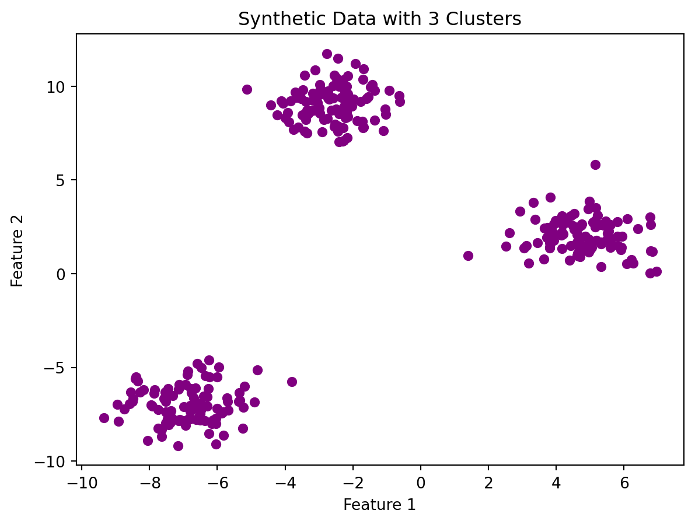
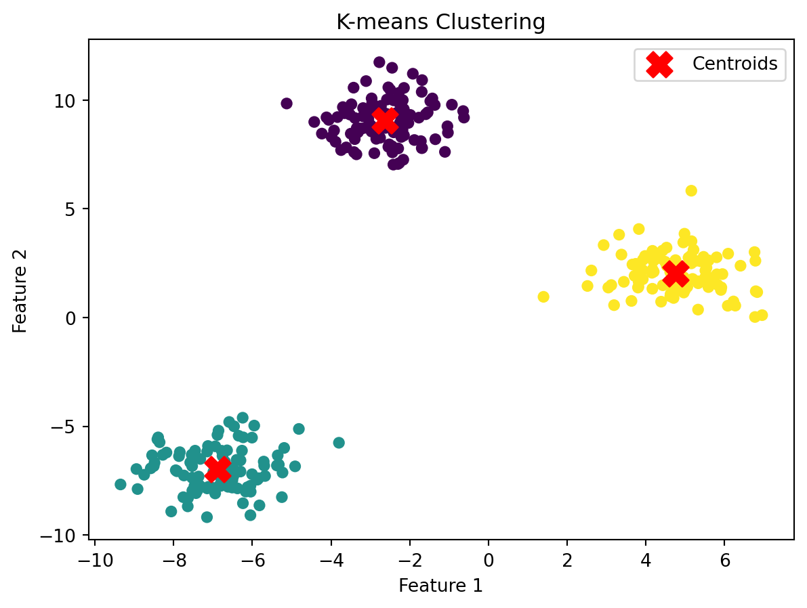

Hello, in this blog post, we will be discussing k-means clustering. The idea behind k-means is to group similar data points together into a predefined number of clusters. You can tell which points are more or less similar to each other depending on how far apart they are. As you may have guessed, the closer the data points are to each other, the more similar they are.
Each data point can be thought of as a point on a graph, such that you can use the distance formula to find out how far apart two points are from one another.
“Centroids” are the center of each cluster. It is not a data point.
The way this algorithm works is that initially, a number of centroids will be assigned. Then, each data point will be assigned a centroid. After that, the centroid will shift it’s position to the middle of all the data points that got assigned to it. This new centroid position can be calculated by finding the mean position of the data points that got assigned to it. Then, the data points will be reassigned to the centroid that it is now closest to. This process will keep iterating until the data points stop getting assigned to a different centroid and the centroids stop shifting.
Even though with our own eyes we can likely distinguish different clusters in a dataset, the point of K-means clustering is for a computer to do that. The first step is to identify the number of clusters we want in our data. This is the “K” in K-means clustering.
Sometimes, even when the centroid-shifting iteration process ends, it is possible that we may end up with clusters that do not match what our eyes would tell us. We can assess the quality of the clustering by adding up the variation within each cluster. Variance is a statistical measure that quantifies the degree of spread or dispersion in a set of data points. Since K-means can’t see the clustering the way we don’t, it keeps track of the variance and starts the whole process over with different starting points.
After K-means has created clusters, it will choose the cluster with the best variance.
When selecting the value for K, there are different methods. One method is trial and error. After trying a few different values for K, we can identify the best one by looking at the total variations and seeing which number has the highest total variation.
It is important to note that even when K-means has reach its ideal values, it may not stop iterating until it’s “sure”.
# Import necessary librariesimport warningswarnings.filterwarnings("ignore")import numpy as npimport matplotlib.pyplot as pltfrom sklearn.cluster import KMeansfrom sklearn.datasets import make_blobs# Create synthetic data with three clustersX, y = make_blobs(n_samples=300, centers=3, random_state=42, cluster_std=1.0)# Visualize the dataplt.scatter(X[:, 0], X[:, 1], c='purple', s=30, cmap='viridis')plt.title("Synthetic Data with 3 Clusters")plt.xlabel("Feature 1")plt.ylabel("Feature 2")plt.show()# Apply K-means clustering with k=3kmeans = KMeans(n_clusters=3, random_state=42)kmeans.fit(X)# Get cluster centers and labelscenters = kmeans.cluster_centers_labels = kmeans.labels_# Visualize the clustered dataplt.scatter(X[:, 0], X[:, 1], c=labels, s=30, cmap='viridis')plt.scatter(centers[:, 0], centers[:, 1], c='red', marker='X', s=200, label='Centroids')plt.title("K-means Clustering")plt.xlabel("Feature 1")plt.ylabel("Feature 2")plt.legend()plt.show()


In this example, we can see data points that in our eyes are clearly belonging to three different clusters. However, the computer does not know that and has to go through the steps to identify the centroids shown in the bottom graph.